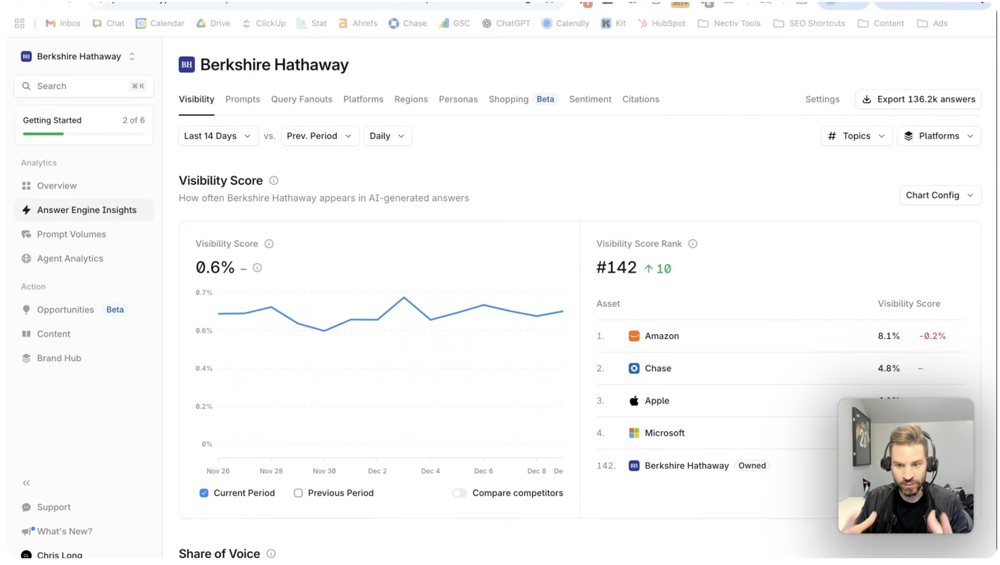

A condensed look at how I'd add a Portfolio layer above your existing brand-level surfaces — built for the CMOs and VPs at your largest customers managing eight, twelve, or fifty brands at once.
I read across your customer reviews and walked through your public surfaces. Your Enterprise tier explicitly sells "multiple companies" as a feature — and your largest customers (GR0, agencies, CMOs of holding groups) often manage 8–50 brands at once. But the workspace switcher in the sidebar only shows one at a time. So a CMO checking how their portfolio is doing has to click through twelve brands, one by one, just to get a snapshot. I sketched what a Portfolio layer above your existing surfaces could feel like — and built it.
Today, even Enterprise customers see Profound through a single-brand lens — switch the workspace dropdown to see the next one. What I'd add is a Portfolio view that renders all brands at once, ranked by where attention is needed. Your existing Visibility, Opportunities, and Agents surfaces all stay exactly as they are — they just become the drill-in when a CMO clicks into a brand.

Today: one brand at a time via the workspace switcher. To check 12 brands, the CMO clicks 12 times — and reassembles the picture in their head.
What I'd add: a Portfolio layer above your existing surfaces. All brands at once, ranked by attention needed. Click any brand → drops into your existing Action Plan / Visibility / Opportunities flow.
Click around the live prototype below — start on Portfolio, click any brand to drill into its Action Plan, click any action card to drill into a Recipe.
Built in HTML/CSS/JS to match your actual UI — light canvas, yellow accent, blue chart line, sidebar grouped by Portfolio / Analytics / Action / Context.